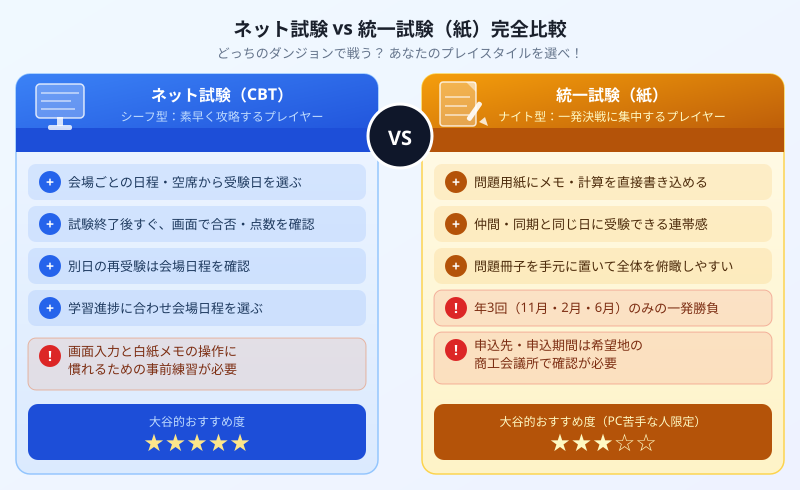

【2026年最新】簿記3級のネット試験 vs 紙の試験、どっちを選ぶべき？
RPGのプレイスタイルで徹底比較！
著者・大谷からひとこと
こんにちは、大谷です！
簿記の勉強を始めると誰もが直面するのが「ネット試験と紙の試験、結局どっちがいいの！？」という大問題です（笑）。
実は僕も初めてネット試験のシステムを見たとき、「問題文に直接メモ書きができない……計算用紙と画面を往復してたら頭がバグる！なんじゃこりゃ、紙の方が楽じゃん！」と絶望しかけました。
今回は、両方のメリット・デメリットを僕のリアルな視点から徹底比較し、あなたが選ぶべき最短の攻略ルートをナビゲートします！
また、モチベ維持のために、記事の末尾にある【いいねボタン】もポチッと押してもらえると、めちゃくちゃ嬉しいです！
まずは全体像を図解で把握しよう

図：ネット試験（シーフ型）vs 統一試験（ナイト型）プレイスタイル比較
まず数字で差を確認！基本スペック比較表
RPGの話の前に、まず客観的な数字の差を表で確認しておきましょう。試験時間・合格基準は同じですが、その他の条件がまったく異なります。
| 比較項目 | ネット試験（CBT） | 統一試験（紙） |
|---|---|---|
| 受験日程 | ほぼ毎日（全国テストセンター） | 年3回（11月・2月・6月） |
| 試験時間 | 60分 | 60分 |
| 合格基準 | 70点以上（100点満点） | 70点以上（100点満点） |
| 合否発表 | 試験終了直後・画面に即表示 | 2〜3週間後（各商工会議所発表） |
| 解答形式 | パソコン入力（クリック・数値入力） | 紙の答案用紙に記入 |
| メモ・計算 | 白紙1〜2枚のみ（問題用紙なし） | 問題用紙に直接書き込み可 |
| 難易度の安定性 | 比較的安定（問題プール方式） | 回によってバラつきあり |
| 不合格後の再受験 | 翌日以降すぐ予約可能 | 次の開催まで数ヶ月待ち |
| 合格証書の効力 | どちらも同等！「日商簿記3級」として認められる | |
RPGのプレイスタイルで考える！シーフ型 vs ナイト型
数字だけで決めようとすると「どっちも良さそう…」と迷ってしまいますよね。そこで、簿記3級の2つの受験スタイルをRPGのキャラクタータイプに例えて整理してみます。
「機動力で数をこなす、速攻クリア型プレイヤー」
シーフは「素早さ」と「機動力」が命のクラスです。重い鎧を着込んで一発決戦に挑むより、何度でも素早く挑戦して最短でクリアする戦術を取ります。
ネット試験はまさにこのプレイスタイルです。「今日は調子いい！」と感じたその日に試験センターを予約して挑戦できます。もし不合格でも「次の週にリベンジしよう」とすぐ立て直せる。このスピード感こそ最大の強みです。
- ほぼ毎日、全国のテストセンターで受験できる（スケジュールの自由度が圧倒的）
- 試験終了後、画面にすぐ合否と点数が表示される（結果を引きずる期間がゼロ）
- 不合格でも翌日から再挑戦の予約が可能（リカバリーが圧倒的に速い）
- 「もう少し勉強してから」と受験日を後ろにズラすことも簡単にできる
- 難易度が比較的安定していて「ハズレ回に当たるリスク」が低い
ネット試験最大の罠は、「問題は画面 → 計算は手元の白紙 → 答えは再び画面に入力」という視線の往復が常に発生することです。
紙の試験なら問題を見ながらそのままメモできるのに、ネット試験では「どこまで計算したっけ？」と画面と手元を往復するたびにわずかに思考が途切れます。
これに慣れないまま本番に臨むと、普段ならできる問題で焦ってパニックに陥ることがあります。対策は事前のシミュレーション練習だけです。公式サンプル問題を使って「白紙のみで60分解く」練習を最低3回はやりましょう。
「重装甲で一発決戦に挑む、正面突破型プレイヤー」
ナイトは防御力と安定感が武器のクラスです。しっかりと重装甲を纏い、万全の準備を整えてから一点突破の決戦に挑む。そういうプレイスタイルです。
統一試験はこの戦術に対応しています。問題用紙を手元に置いてゴリゴリとメモを書き込める安心感、仲間と同じ日に挑む連帯感、問題冊子を俯瞰しながら全体の戦略を立てられる広い視野——これらはナイト型の明確な強みです。
- 問題用紙に直接メモ・計算・仕訳の下書きを書き込んで安心して解ける
- 学校や職場の仲間と同じ試験日に受験できる（一体感・モチベが上がる）
- 問題冊子全体を机の上に広げて俯瞰しながら時間配分を考えやすい
- 年3回（11月・2月・6月）しか受験機会がなく、タイミングを逃すと数ヶ月待ち
- 合否発表まで2〜3週間かかり、その間ずっとモヤモヤした気持ちを引きずる
- 試験回ごとに難易度のバラつきがあり、ハズレ回に当たると合格率が下がるリスク
- 不合格だった場合、次のチャンスまで何ヶ月も待たなければならない精神的負担
【CBT最大の罠】視線移動パニックを完全克服する方法
ネット試験を勧めておいてなんですが（笑）、この罠だけは事前に対策しないと本当に痛い目に遭います。大谷が考える攻略ステップを紹介します。
日本商工会議所の公式サイトから「ネット試験サンプル」をダウンロードし、画面上で見る練習を始める。問題用紙は一切印刷しない。
本番と同じ条件（白紙のみ・電卓あり）で、60分計って最後まで解き切る練習を繰り返す。「練習だから」と問題を印刷するのは厳禁。
「上半分に仕訳の下書き、下半分に数値メモ」など、白紙の使い方のルールを自分なりに作る。毎回同じレイアウトにすることで、計算途中で迷わなくなる。
ネット試験では電卓に数値を一時保存しながら進める場面が多い。M+（メモリに加算）とMR（メモリ呼び出し）の使い方を事前に反復練習しておく。
3回分の模擬演習を終えた時点で、たとえ不安があっても受験日を確定させる。「完璧になってから」は絶対に来ないので、退路を断つことが最速の合格につながる。
あなたはどっちを選ぶべき？タイプ別・最終おすすめ判定
ケース1（9割の人）：迷ったらネット試験（CBT）一択！
正直、特別な事情がない限りはネット試験（CBT）を強く推薦します。
「いつでも受けられる」「すぐ結果がわかる」「不合格でもすぐリトライできる」——この3点だけで、受験生のストレスが桁違いに少なくなります。勉強を始めた勢いそのままに、自分のペースで試験日を設定できるのは、独学者には特に大きなアドバンテージです。
ネット試験に向いている人：
- 独学で自分のペースで進めている（学校のカリキュラムに縛られていない）
- 「仕事が一段落した3週間後に受けよう」など、柔軟にスケジュールを組みたい
- 早く結果を知りたくて2〜3週間待てない性格（ほぼ全員？笑）
- 万が一の場合にすぐリトライできる環境を確保しておきたい
- PCの基本操作（クリックと数値入力）には慣れている
ケース2（1割の人）：これに当てはまるなら統一試験を選んでOK
絶対にダメとは言いません。以下のどれかに当てはまる場合は、統一試験（紙）をターゲットにするのも合理的な選択です。
- PC入力の速度が遅くてどうしても焦ってしまう人（キーボード入力に慣れていない60代以上の方など）
- 問題用紙に書き込まないと思考がまとまらず、絶対にパニックになる人（白紙練習を試したが改善しなかった場合）
- 専門学校や大学の授業で、次の統一試験受験が必須スケジュールになっている人
- 「同期みんなと同じ日に受けたい！」という気持ちが強い人
まとめ
- ネット試験（CBT）= シーフ型。いつでも挑戦・即時合否・すぐリトライの機動力型。9割の人にとって最短合格への近道
- 統一試験（紙）= ナイト型。問題用紙への書き込み・仲間と同日受験の安心感型。PC操作が苦手な人や学校カリキュラムに縛られている人向け
- どちらを選んでも取得できる資格・合格証書の効力は完全に同等
- CBTの最大の罠「視線移動パニック」は白紙のみでの事前練習3回で確実に克服できる
- 迷ったら即CBT。「完璧な準備が整ったら」は永遠に来ないので、受験日を先に確定させて退路を断つのが最速の合格ルート
じゃあ、次の試験日はいつ？今すぐ確認しよう！
「ネット試験に挑戦しよう！」と決めたなら、次のステップは受験日の確認と予約です。
「次の試験日はいつ？最速ロードマップ」の記事で、CBTのテストセンター予約手順と100時間合格ロードマップを解説しています。